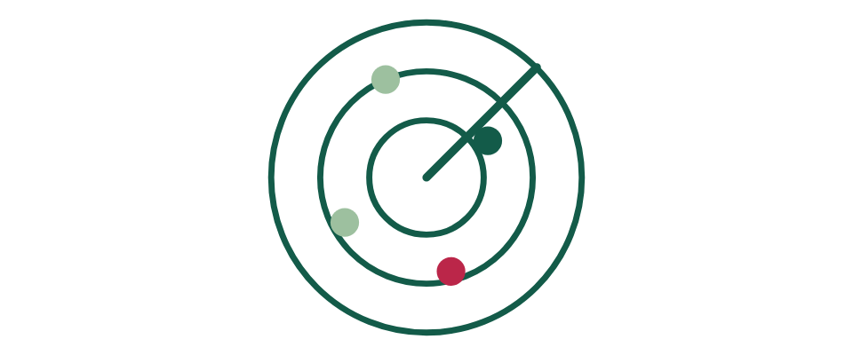
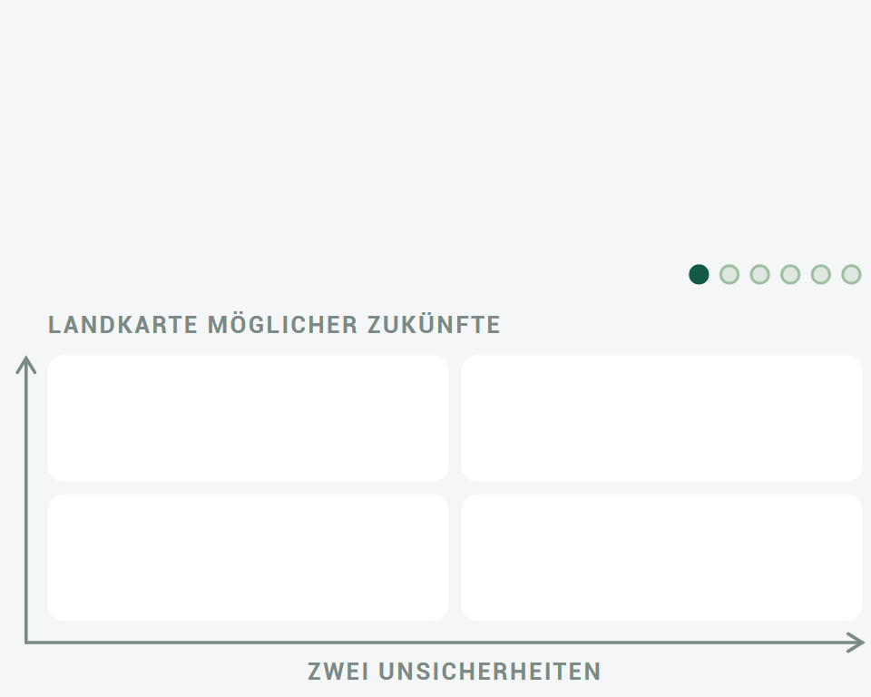
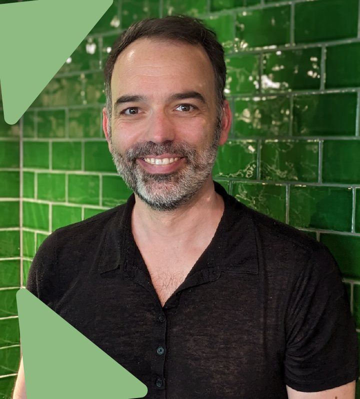
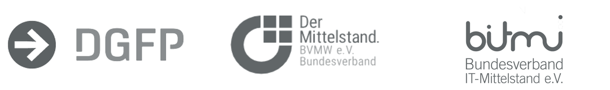

„Wissen, was kommt“
„Dann könnte es in Deutschland nicht mehr drei Superprognostiker geben. Sondern viele.“
Die Zukunft müssen Sie heute noch nicht kennen – Sie können sich ihr systematisch nähern. Wir übersetzen mit Ihnen strategische Themen in überprüfbare Fragen, die Ihre Fachleute und eine KI gemeinsam einschätzen. So sehen Sie früher, welche Pfade sich abzeichnen.
„Dann könnte es in Deutschland nicht mehr drei Superprognostiker geben. Sondern viele.“
„Eine Software, die den Wissensschatz der Belegschaft für Entscheidungen verfügbar macht.“
„Die Kunst, die richtigen Fragen zu stellen. Wie Prognosekompetenz unsere Entscheidungen verbessert.“
Damit Annahmen über die Zukunft geteilt werden und nicht in einzelnen Köpfen bleiben.
Damit Mittel dorthin gehen, wo sie von heute an am effektivsten wirken.
Damit Sie gestalten können, solange die Optionen offen stehen.
„Niklas und Timo haben die Gruppe kompetent durch eine interaktive und wissenschaftlich fundierte Session geführt. Die Perspektive darauf, was eine gute Entscheidung ausmacht, hat sich dabei für viele ganz grundlegend verändert! Die Teilnehmenden sind mit klarer Theorie und praktischen Ansätzen, wie kollektive Prognosefähigkeit in Unternehmen integriert werden kann, aus dem Nachmittag gegangen.“
Miriam Löscher
Learning & Development Managerin, On Purpose Berlin
„Besonders spannend ist für mich der strukturierte Blick auf die Einschätzungen vieler verschiedener Stakeholder. Unser Projekt bezieht sich auf die wirtschaftliche Transformation in der Region. Die Crowd-Prognose macht sichtbar, wo sich Erwartungen bündeln und wo bewusst unterschiedliche Sichtweisen bestehen – genau daraus generieren sich oft die interessantesten Erkenntnisse. Wir beginnen uns selbst kritischer zu hinterfragen und suchen gezielter nach anderen Perspektiven, die uns bisher vorenthalten geblieben sind.“
Dr. Christian Seynstahl
Bereichsleiter Standortpolitik, Innovation und Unternehmensförderung, IHK Würzburg-Schweinfurt
Mit dem Perspektiv schaffen wir zum Einstieg einen gemeinsamen Blick. Der Zukunftsatlas, der daraus entsteht, öffnet die strategische Sicht nach vorn. Mit dem Radar skalieren Sie die Methode: Ihr Umgang mit der Zukunft gewinnt an Dynamik, und Schritt für Schritt wirken größere Teile Ihrer Organisation mit.

In drei Workshops entsteht ein gemeinsamer, strukturierter Blick auf die Fragen Ihrer Zukunft. Eine KI-Prognose bewertet jede Frage mit Argumentation und Quellen. Nach zwei Wochen liegt Ihr Zukunftsatlas vor.
Ein Perspektiv ist ein kleines Fernrohr. Wer in unübersichtlichem Gelände steht, verschafft sich damit rasch einen Überblick: Seine Linsen bündeln das Licht zu einem klaren Bild – so wie das Perspektiv viele Sichtweisen zu einem gemeinsamen Blick bündelt.

Ihre eigene Instanz auf der Prognoseplattform von arq decisions. Als dynamischer Monitor zeigt sie, wo sich bei Ihren Zukunftsfragen etwas bewegt. Menschen aus der ganzen Organisation schätzen ein und erhalten die Insights, die KI-Prognose läuft mit, arq decisions analysiert mit Ihnen, und mit der Zeit wächst bei Ihnen ein Center of Excellence für den Blick nach vorn.
Ein Radar zeigt auf einer vertrauten Karte, was sich bewegt und was näher kommt – früh genug, um entschlossen zu navigieren.
Die Methode passt auf sehr unterschiedliche Zukunftsfragen, von der Wertschöpfung einer Region bis zum Personalbedarf einer Stadt. Alle sechs Fallbeispiele finden Sie in der Übersicht.


Industrie, Innovation und externe Impulse gemeinsam beurteilen, um Prioritäten zu setzen und Mitglieder früh zu orientieren.
Kammer
Prognosen aus vielen Köpfen gehören zu den am besten untersuchten Werkzeugen für Entscheidungen unter Unsicherheit. Unsere Methode setzt dort an, wo die Forschung die größten Gewinne zeigt, und wir forschen selbst weiter.
Cowgill & Zitzewitz (2015)
Bei Google, Ford und einem großen Industrieunternehmen lagen interne Prognosemärkte näher an der Wirklichkeit als die Vorhersagen der Fachleute.
König-Kersting, Litovsky et al. (2026)
129 Forschungsteams, darunter arq decisions, testeten Verfahren, um die Prognosen vieler Menschen zu bündeln.
Wallmeier, in Vorbereitung
Wie bündelt man die Prognosen kleiner Gruppen, wenn die Erfahrung mit der Treffsicherheit Einzelner noch kurz ist? Ein Modell und Daten von der Prognoseplattform von arq decisions.
Forschung
Weitere Studien und die Arbeiten von arq decisions zu gemeinsamen Prognosen und Entscheidungen in Gruppen.
Große Prognoseturniere haben Tausende Teilnehmende und Hunderte Fragen. Eine Organisation hat ein Dutzend Menschen und am Anfang keine Bilanz. Unsere eigene Forschung mit Daten der Prognoseplattform von arq decisions zeigt, was in dieser Lage gilt.
Wallmeier (2026), Wem vertrauen, und wann?, Working Paper in Vorbereitung; dazu Mannes, Soll & Larrick (2014), Atanasov et al. (2017, 2024) und König-Kersting, Litovsky et al. (2026).
Ab der ersten Frage
Jede Person schätzt zuerst allein ein, bevor sie die anderen sieht. Schon fünf Menschen erreichen den größten Teil dessen, was eine große Runde erreicht.
Ab der ersten Frage
Neue Einschätzungen zählen mehr als alte. Die Runde aktualisiert, sobald neue Informationen vorliegen.
Ab der ersten Frage
Keine Gewichte, keine Ranglisten, kein maschinelles Lernen: Aufwendige Verfahren bringen Risiko, keine Genauigkeit.
Später
Erst wenn genug Fragen aufgelöst sind, zeigt eine Bilanz Können statt Glück. Dann lohnt es sich, Einzelne stärker zu gewichten.
In 30 Minuten klären wir Ihre Zukunftsfrage und wer aus Ihrer Organisation sie einschätzen sollte.
Mitgründer und Geschäftsführer. Forscht seit über zehn Jahren zu kollektiven Entscheidungen und Prognosen.
Seine Erkenntnis: Stille Post blockiert erfolgreiche Strategie. Klare Kommunikation und ein gemeinsames Verständnis sind der Schlüssel, um ein bisschen früher, ein bisschen weniger falsch zu liegen.

Mitgründer und Geschäftsführer. Bringt seit über 20 Jahren Innovationen in die Planung und Steuerung von Unternehmen und Konzernen.
Seine Erkenntnis: Am Ende steht immer der Mensch im Zentrum. Eine Lösung kann nur so gut sein wie die Menschen, die sie umsetzen.
Beschreiben Sie es uns in zwei Sätzen. Wir schlüsseln es für Sie auf, mit einer beispielhaften Landkarte möglicher Zukünfte.

Mitglied in der DGFP, im Mittelstandsverband BVMW und im Bundesverband IT-Mittelstand